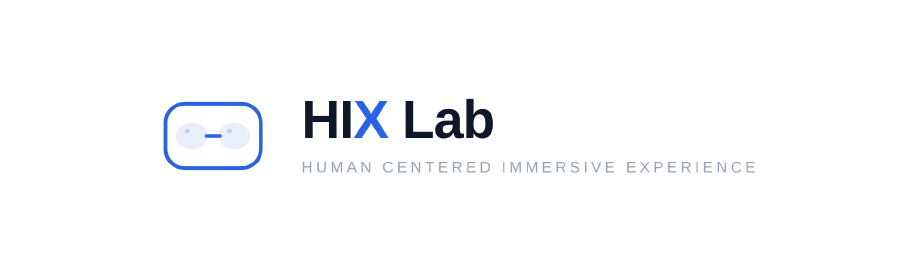
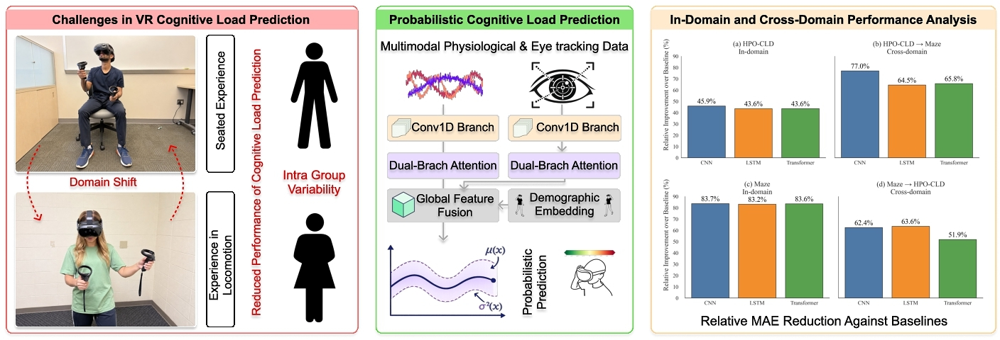
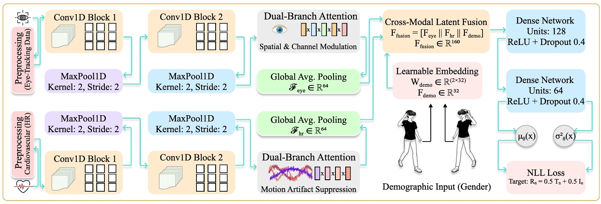
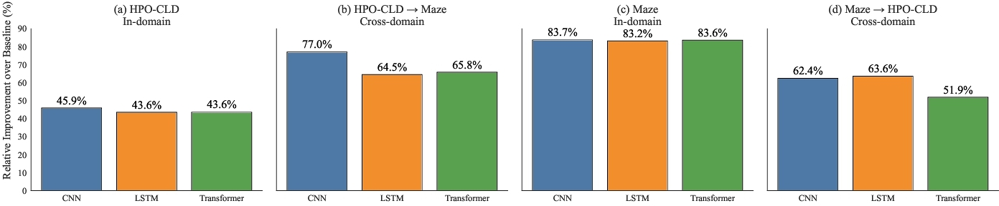
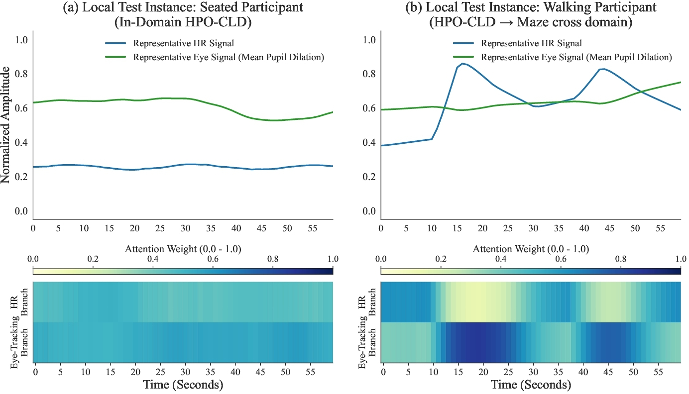
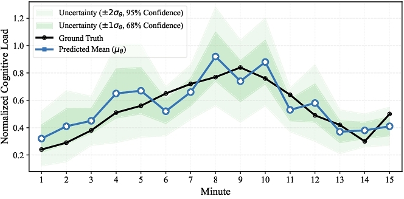
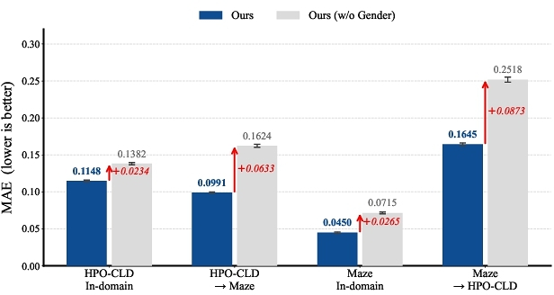

Learn temporal features
Parallel 1D convolutional branches process 60-second windows of eye-tracking and cardiovascular signals.
32nd ACM Symposium on Virtual Reality Software and Technology · 2026

A system trained in a quiet, seated VR session should not lose its footing when a person starts moving.

Physiological signals such as heart rate and pupil diameter are personal—and they change with the environment. Models trained with stationary users can struggle when applied to active users, where locomotion adds motion artifacts and a new domain shift. We study continuous cognitive load prediction across stationary HPO-CLD and real-walking Maze VR data. Our approach combines eye-tracking and cardiovascular signals, adaptively reweights the two modalities, represents group-level gender differences without a calibration session, and predicts both cognitive load and its uncertainty.
Parallel temporal encoders learn from eye tracking and heart rate, then attention and a learnable gender embedding help the model adapt before it estimates a distribution over cognitive load.

Parallel 1D convolutional branches process 60-second windows of eye-tracking and cardiovascular signals.
Dual-branch attention adaptively reweights modalities; a learnable gender embedding represents group-level baseline variation.
A Gaussian output estimates the mean cognitive load and variance, trained with a negative log-likelihood objective.
Evaluated in both directions between stationary HPO-CLD and real-walking Maze data, the method outperforms standard CNN, LSTM, and transformer baselines.
For the more demanding stationary-to-walking transfer, the proposed method achieves a 77% relative error reduction compared with a standard CNN baseline. Reverse transfer to HPO-CLD reaches an MAE of 0.1645.

The model is evaluated from HPO-CLD to Maze and from Maze to HPO-CLD—not only within a single setting.
Across both datasets and both transfer directions, adding the demographic embedding lowers MAE compared with removing it.
The probabilistic output captures predictive spread, making uncertain moments visible to downstream VR systems.
The model can change how it weighs physiological and eye-tracking signals over time rather than treating each channel as equally reliable.
In the walking example, the input patterns differ from the seated example. The attention visualization shows how the two branches are weighted through each sequence, offering a view into modality reweighting under changing conditions.

A point estimate alone hides when a model is unsure. The probabilistic formulation predicts a mean and variance so adaptive experiences can respond more thoughtfully.
The predicted mean tracks the ground-truth cognitive load while shaded bands show the model's estimated uncertainty. Wider intervals indicate moments where the system should be more cautious about acting on the prediction.


The full paper includes the dataset setup, model details, and experimental evaluation.
Nasim Ahmed and Rifatul Islam · 32nd ACM Symposium on Virtual Reality Software and Technology · 2026
doi.org/10.1145/3822517.3848682 ↗@inproceedings{ahmed2026feelingdifferent,
author = {Ahmed, Nasim and Islam, Rifatul},
title = {I'm Feeling Different: Uncertainty-Aware Cross-Domain Cognitive Load Prediction in Virtual Reality},
booktitle = {32nd ACM Symposium on Virtual Reality Software and Technology (VRST '26), November 16--18, 2026, Sendai, Japan},
year = {2026},
publisher = {ACM},
address = {New York, NY, USA},
numpages = {12},
doi = {10.1145/3822517.3848682},
url = {https://doi.org/10.1145/3822517.3848682}
}